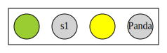

Toolname
[Insert brief description of tool here]
Introduction
Toolname is a tool for verifying [MORE INFO ABOUT THE TOOL] It's written in Scala which builds on Java. This means that Toolname runs in any environment that supports Java. The code is available on GitHub for free under the GNU General Public License version 3 (GPL-3.0).
Toolname relies on Scala and the build tool Scala sbt. It is able to output graphs in the graphviz dot-format. To view such graphs the graphviz tool is required. While this can be useful, it is not necessary to run the tool.
Included in the git project is a sample config- and protocol-file. The config file is located in the root and is called config.txt, the sample protocol is located in test_data/burns.txt. The sample protocol represents Burns protocol of mutual exclusion.
Installation
Installing Toolname is easy. Toolname requires Scala and the build tool sbt. To install Toolname, follow these steps:
- Install Scala
- Install Scala sbt
-
Checkout source from github:
$ git clone https://github.com/Nehlin/uu_tool_1.git
-
Build project using sbt:
$ cd uu_tool_1
$ sbt run
Options
Toolname accepts paramters in two formats: through the command line or through a file config.txt (a sample file is included in the source from GitHub) located in the same directory as the executable. Parameters supplied through the command line take precedence over parameters from config.txt. Commands are always specified as a key-value-pair. Some commands are mandatory, while other have default values. If the tool outputs any files, these are located in a directory called result.
Parameters in config.txt are specified like this:
% The following lines will assign 'value1' and 'value2' to the parameters 'key1' and 'key2'
key1=value1
key2=value2
The command line accepts the same parameters as config.txt. To achieve the same result as above, the following is used:
Following is a list of available commands:
| Effect | Key | Value | Required | Default |
|---|---|---|---|---|
| Specify protocol file | p | Search path to valid protocol file. | Yes | - |
| Set maximum k | max_k | Specifies the maximum k value, after which the execution will end and the result will be unclear. | No | 5 |
| Generate .dot-file for the protocol. If this parameters is set to true, a file named Protocol.dot is generated in the result directory. If this parameter is set to only, only the protocol file will be generated, nothing else. | protocol_dot | true/false/only | No | false |
| Generate .dot-file for counter example. If a bad state is reachable this means that there is a series of posts leading to it. If this parameter is set to true, a file named CounterExample.dot is created in the result directory. | counter_dot | true/false | No | false |
| Generate log file. If this parameter is set to true, a file called Log.txt containing various information about the execution is is created in the result directory. | log_file | true/false | No | true |
Protocol format
The protocol file consists of four parts: a declaration of available states, initial configurations, the bad configuration and a set of rules, in that order. Any line starting with a '%' or any empty line is ignored. Each declaration type will be shown with example code. Combining the example code snippets yields a valid protocol file (but probably not of any meaningful protocol).
States
The state declaration begins with a line with the text "States:". Each following line declares the name of a state, until the starting line of the initial configuration. A valid state name is a string consisting of (A-Z, a-z, 0-9, _). State names are case sensitive.
As a convenience, some state names will create coloured, rather than named states in the generated .dot-files. States named as any of the following colours will be treated as a colour: Red, Green, Blue, Yellow, Black, White. This list can easily be extended in the function colourForName in Dot.scala. When determining whether to display a colour or a name, case is ignored. (Note that this means that "black" and "BLACK" represent different states but will both be displayed the same in a .dot-file. This should not be a problem unless you make it one.)
Below is the resulting .dot-representation of a configuration with states named ["Green", "s1", "YeLLoW", "Panda"].
States:
Red
Green
Blue
Yellow
Black
White
Initial configurations
The initial configuration declaration begins with a line with the text "Initial configurations:". The following line should contain a state name. All initial configurations are repetitions of that state.
% All initial configurations will be of the form Green+
Initial configurations:
Green
Bad configuration
The bad configuration declaration begins with a line with the text "Bad configuration:". The following line should contain a comma separated list representing a bad configuration. Any configuration which contains the bad configuration as a sub word is bad.
% Any configuration that contains a Red state to the left of a Yellow state is bad.
Bad configuration:
Red, Yellow
Rules
There are 3 types of possible rules: Unrestricted, Existential and Universal. Existential and Universal rules may apply to all states, or to the states to the left (L), or right (R) of the current state. The rule declaration begins with a line with the text "Rules:". All following lines contain a single rule. The following examples specify how rule types and sides are specified. No rule type means Unrestricted, no side specified means that it applies to all states.
% Unrestricted rule from Red to Green
Red -> Green
% Existential rule (E): From Green to Yellow if there exists a Blue state anywhere
Green E (Blue) -> Yellow
% Existential rule (E): From Yellow to Blue if there exists a Red or Green state to the left (L)
Yellow E L (Red, Green) -> Blue
% Universal rule (A): From Blue to Black if all states are Red, Green or Yellow
Blue A (Red, Green, Yellow) -> Black
% Universal rule (A): From Black to White if all states to the right (R) are White or Red
Black A R (White, Red) -> White